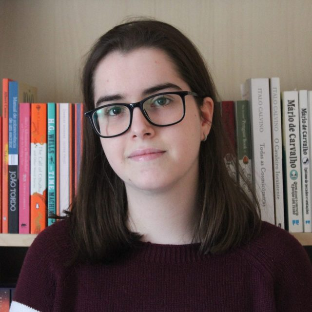
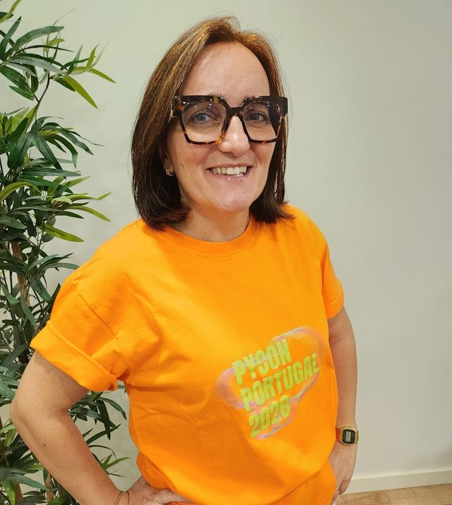

Olá, Lisboa!
A PyLadies Lisboa é uma comunidade para mulheres e pessoas não-binárias que querem aprender, usar e liderar em Python.
Para todos os níveis: de quem nunca escreveu uma linha de código a quem já programa há anos.

Uma comunidade para aprender em conjunto
Somos o capítulo lisboeta da PyLadies, a comunidade internacional que ajuda mais mulheres e pessoas não-binárias a participar ativamente na comunidade Python. Queremos criar um espaço acolhedor, onde se aprende, partilha e cresce, sem pressão.
-
Encontros
Noites descontraídas para conhecer pessoas, pôr dúvidas em cima da mesa e programar lado a lado.
-
Workshops
Sessões práticas, do primeiro script à análise de dados, com mentoras por perto para ajudar.
-
Palestras
Um palco para partilhares o que sabes, seja a tua primeira apresentação ou a vigésima.
Temos novidades a caminho
Estamos a preparar o primeiro encontro. Segue-nos nas redes sociais para saberes a data assim que for anunciada.
>>> import pyladies_lisboa
>>> pyladies_lisboa.proximo_encontro
'em breve…'
>>> pyladies_lisboa.experiencia_necessaria
None # vem como estásHá lugar para ti
-
Vem a um encontro
Não precisas de experiência nem de convite. Traz o portátil e a curiosidade.
-
Dá uma palestra
Tens um projeto, uma ferramenta ou uma ideia para partilhar? Ajudamos-te a preparar a apresentação.
-
Sê mentora ou voluntária
Ajuda nos workshops, na organização ou na divulgação, com o tempo que puderes dar.
-
Acolhe-nos
Empresas, universidades e espaços que queiram receber um encontro ou apoiar a comunidade: fala connosco.
Quem coordena
Quatro percursos diferentes, a mesma vontade de pôr mais gente a programar em Python.
-

Ana Machado
Oceanografia Física
Investigadora · FCUL
Entre Aveiro e Lisboa, é licenciada em Meteorologia e Oceanografia Física e doutorada em Oceanografia Física. Trabalha com modelos numéricos do oceano em Fortran, a correr em HPC, e usa Python para preparar e analisar os dados — e também nas aulas que dá.
>>> ana_machado.editor_favorito 'vi' -

Ana Sofia Sousa
Engenharia Física
Aluna de doutoramento · IST
Natural de Valongo, vive em Lisboa há sete anos. Está no doutoramento em Tecnologias e Ciências Nucleares no Instituto Superior Técnico. É presidente dos Young Minds e representa Portugal no NuFFER, o fórum europeu de jovens investigadores em física nuclear.
>>> ana_sofia.numero_de_livros ~250 -

Diana Geirinhas
Engenharia Biológica
Aluna de mestrado · IST
Estuda no Instituto Superior Técnico, onde está a fazer o mestrado em Engenharia Biológica. Fora das aulas, divide o tempo entre ler, escrever, desenhar e pintar — e agora também a ajudar a crescer a comunidade da PyLadies Lisboa.
>>> diana.animal_de_estimacao 'um gato que a adotou!' -

Teresa Cutelo
Economia e Finanças
MBA em Data Science
Descobriu o Python como porta de entrada no mundo da programação e não parou mais. Lisboeta de nascença, acredita na aprendizagem contínua e na diversidade de percursos na tecnologia — e quer construir na sua cidade um espaço onde todas se sintam em casa.
>>> teresa.receita_ideal ['partilha', 'comunidade', 'Python']

Código de conduta
Todos os nossos eventos e espaços seguem o Código de Conduta da PyLadies. Se algo te deixar desconfortável, fala com a equipa de coordenação.